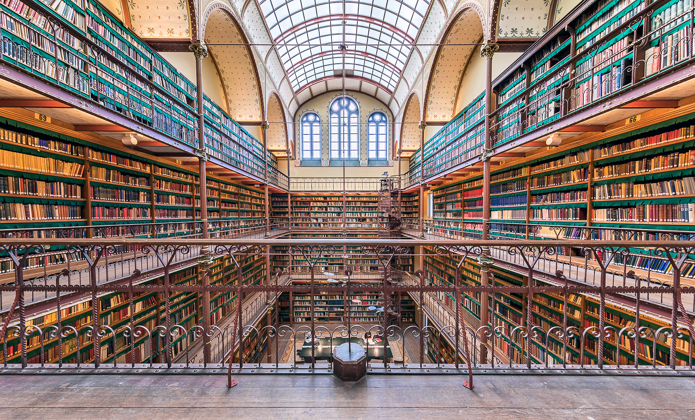
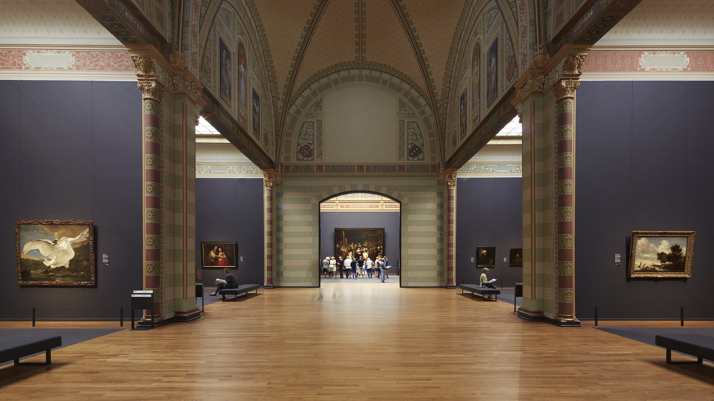
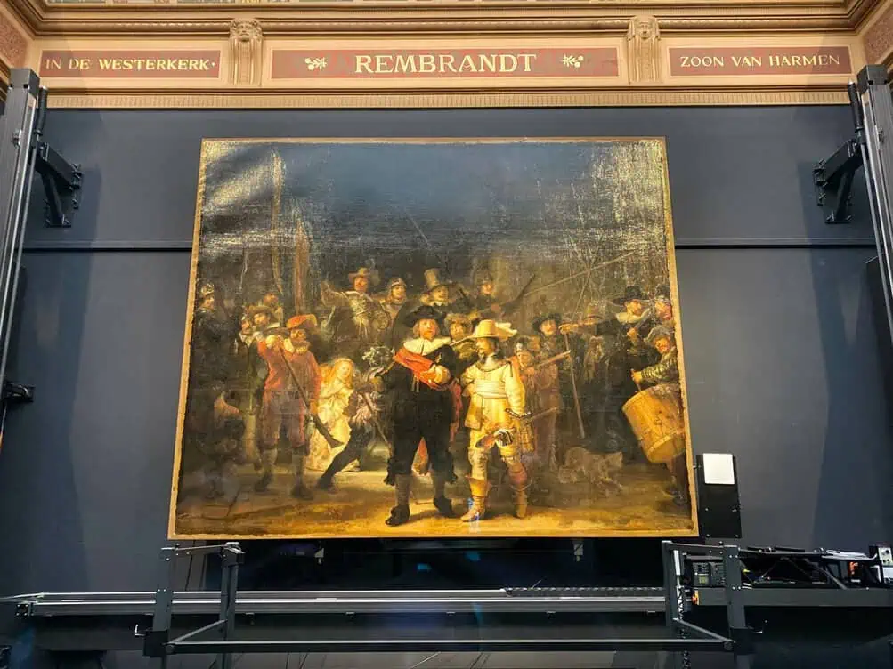
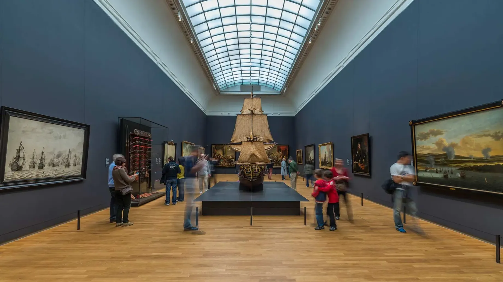
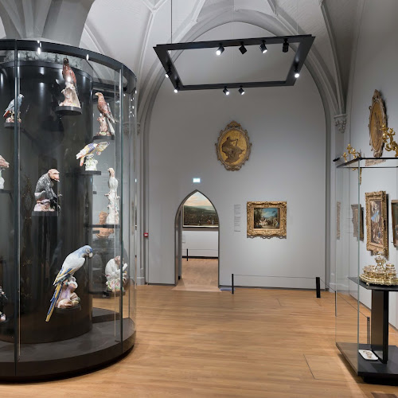
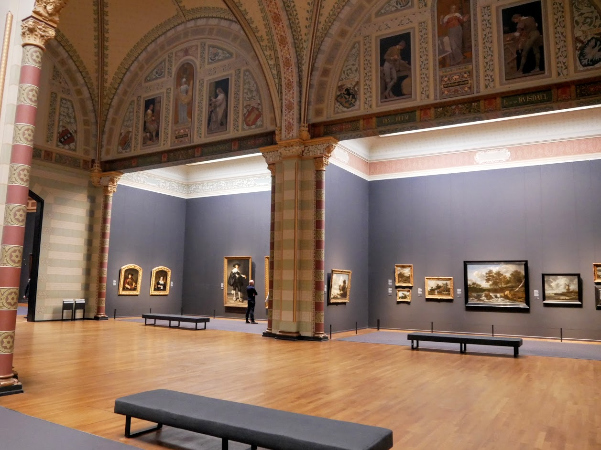
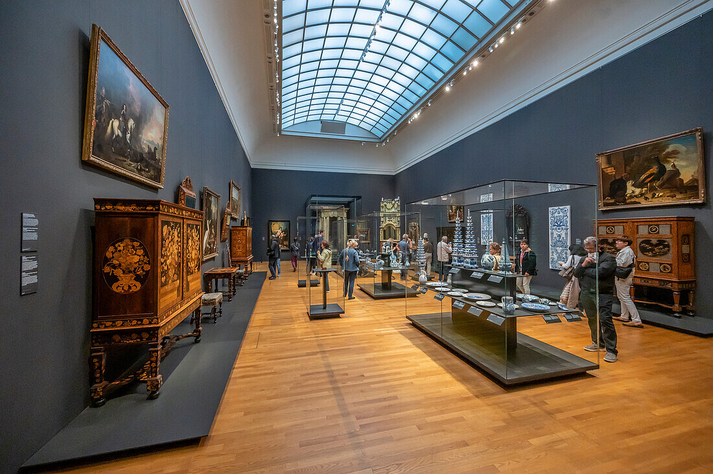

Rijksmuzey: Niderlandiya san’ati va milliy tarixining yuragi

Rijksmuzey (gollandcha Rijksmuseum) — Niderlandiyaning eng yirik va eng mashhur muzeyi bo‘lib, mamlakatning poytaxti Amsterdam shahrida joylashgan. Ushbu muzey Niderlandiya milliy san’ati, tarixi va madaniyatining eng muhim ramzlaridan biri hisoblanadi. Rijksmuzey, ayniqsa, Gollandiya Oltin asri rassomchiligi bilan dunyoga tanilgan bo‘lib, Rembrandt, Vermeer, Frans Hals kabi buyuk rassomlarning bebaho asarlarini o‘zida jamlagan. Har yili millionlab tashrif buyuruvchilar Rijksmuzeyga kelib, san’at, tarix va milliy meros bilan yaqindan tanishadilar. Muzey nafaqat san’at ixlosmandlari, balki tarix, madaniyat va jamiyat taraqqiyotiga qiziquvchilar uchun ham muhim maskan hisoblanadi.
Rijksmuzeyning tashkil topishi
Rijksmuzey tarixi 1800-yilga borib taqaladi. Muzey dastlab Gaaga shahrida tashkil etilgan bo‘lib, uning maqsadi Niderlandiya Respublikasi tarixiga oid muhim san’at asarlari va buyumlarni bir joyga jamlash edi. 1808-yilda muzey Amsterdam shahriga ko‘chirildi va qirol Lyudovik Bonapart tomonidan qirollik muzeyi sifatida rivojlantirildi. Hozirgi mashhur bino esa 1885-yilda rasman ochilgan. Muzey binosi mashhur me’mor Pyer Kyupers (Pierre Cuypers) tomonidan loyihalashtirilgan. U o‘rta asr gotikasi va Uyg‘onish davri uslublarini uyg‘unlashtirgan holda barpo etilgan.
Muzey binosi va me’morchiligi
Rijksmuzey binosi o‘zining ulkanligi, murakkab bezaklari va ramziy elementlari bilan ajralib turadi. Bino tashqi ko‘rinishidan saroyni eslatadi. Uning fasadida Niderlandiya tarixiga oid haykallar, naqshlar va bezaklar joylashtirilgan. Muzey binosining markaziy qismi ostidan ochiq yo‘lak o‘tadi, bu Amsterdam shahri uchun o‘ziga xos me’moriy yechim hisoblanadi. Ichki zallar keng, yorug‘ va zamonaviy tarzda tashkil etilgan bo‘lib, tarixiy bezaklar bilan zamonaviy dizayn uyg‘unlashtirilgan.
Rijksmuzey kolleksiyasi
Rijksmuzey kolleksiyasida 1 milliondan ortiq eksponat mavjud bo‘lib, ularning taxminan 8–10 mingga yaqini doimiy ekspozitsiyada namoyish etiladi. Kolleksiya O‘rta asrlardan XX asrgacha bo‘lgan davrni qamrab oladi. Asosiy yo‘nalishlar quyidagilardan iborat:
- Gollandiya Oltin asri san’ati
- Yevropa rassomchiligi
- Haykaltaroshlik
- Amaliy va bezak san’ati
- Tarixiy qurollar va kemalar
- Osiyo san’ati
Rijksmuzey faqat san’at muzeyi emas, balki milliy tarix muzeyi ham hisoblanadi.
Gollandiya Oltin asri san’ati
Rijksmuzeyning eng mashhur va eng muhim bo‘limi — XVII asr Gollandiya san’ati, ya’ni Oltin asr rassomchiligi hisoblanadi. Bu davrda Niderlandiya savdo, ilm-fan va san’atda yuksak taraqqiyotga erishgan.
Rembrandt van Reyn
Rijksmuzeyning eng mashhur asari — Rembrandt tomonidan yaratilgan “Tungi qo‘riqchilar” (“The Night Watch”) kartinasidir. Bu asar harakat, dramatizm va yorug‘lik-soya o‘yinlari bilan ajralib turadi. Kartina muzeyning markaziy zalida joylashgan bo‘lib, Rijksmuzey ramziga aylangan
Yan Vermeer
Rijksmuzeyda Yan Vermeerning bir nechta nodir asarlari mavjud. Uning sokin, yorug‘ va intim muhitdagi kompozitsiyalari kundalik hayot go‘zalligini tasvirlaydi. “Sut quyayotgan ayol” asari eng mashhurlaridan biridir.
Frans Hals
Frans Hals o‘zining jonli portretlari bilan tanilgan. Uning asarlarida odamlarning xarakteri va hissiyotlari aniq ifodalangan bo‘lib, ular Gollandiya jamiyatining ruhini aks ettiradi.
Yevropa va Osiyo san’ati
Rijksmuzeyda Gollandiya san’ati bilan bir qatorda boshqa Yevropa mamlakatlari san’ati ham namoyish etilgan. Flamand, italyan va fransuz rassomchiligi namunalarini uchratish mumkin. Shuningdek, muzeyda Osiyo san’ati bo‘limi mavjud bo‘lib, unda Xitoy, Yaponiya, Hindiston va Janubi-Sharqiy Osiyo madaniyatiga oid haykallar, chinni buyumlar va diniy asarlar saqlanadi. Bu bo‘lim Niderlandiyaning tarixiy savdo aloqalarini aks ettiradi.
Amaliy san’at va tarixiy buyumlar
Rijksmuzeyda kundalik hayotga oid buyumlar ham katta o‘rin egallaydi. Bu yerda:
- Qirollik kiyimlari
- Zargarlik buyumlari
- Chinni va kumush buyumlar
- Tarixiy qurollar
- Kema modellari
namoyish etiladi. Ayniqsa, tarixiy kemalar va dengizchilik buyumlari Niderlandiyaning dengiz davlati sifatidagi ahamiyatini ko‘rsatadi.
Rijksmuzey va milliy o‘zlik

Rijksmuzey Niderlandiya milliy o‘zligini shakllantirishda muhim rol o‘ynaydi. Muzey orqali mamlakat tarixi, mustaqillik uchun kurash, savdo imperiyasi va madaniy taraqqiyot jarayonlari yoritiladi. Muzey nafaqat o‘tmishni namoyish etadi, balki jamiyatni o‘z tarixiga tanqidiy qarashga ham chorlaydi. So‘nggi yillarda muzey ekspozitsiyalarida mustamlakachilik va ijtimoiy masalalar ham ochiq muhokama qilinmoqda.
Ta’lim, ilmiy tadqiqot va zamonaviy texnologiyalar
Rijksmuzey faol ilmiy-tadqiqot markazi hisoblanadi. Bu yerda restavratsiya ishlari olib boriladi, san’at asarlari chuqur o‘rganiladi va xalqaro ko‘rgazmalar tashkil etiladi. Muzey raqamli texnologiyalarni faol qo‘llaydi: ko‘plab asarlar yuqori sifatda onlayn platformalarda taqdim etilgan, virtual ekskursiyalar mavjud. Bu esa Rijksmuzeyni butun dunyo uchun ochiq qiladi.
Rijksmuzey — bu Niderlandiya tarixining, san’atining va milliy o‘zligining yorqin ifodasidir. Uning zallarida oddiy xalq hayotidan tortib, buyuk tarixiy voqealargacha bo‘lgan jarayonlar san’at orqali namoyon bo‘ladi. Rijksmuzeyga tashrif buyurish — bu faqat san’atni tomosha qilish emas, balki xalqning ruhi, tafakkuri va tarixiy yo‘lini his qilish demakdir. Shu sababli u dunyodagi eng muhim va eng ta’sirchan muzeylardan biri sifatida e’tirof etiladi.